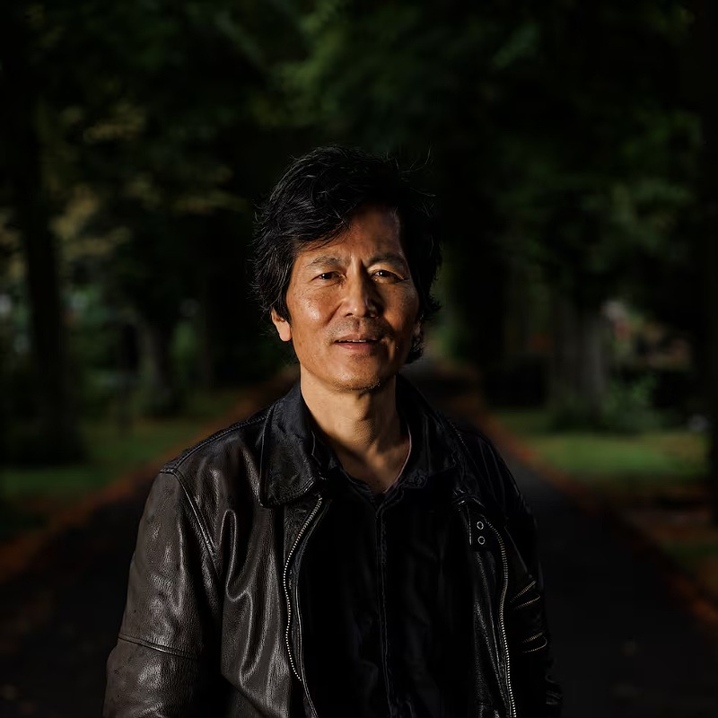

I watched the video summary of Byung-Chul Han's book, Shanzai. I was pretty thrilled and excited by this idea of Western vs Eastern conceptions of 'the original' and how we value you copies and forgeries. The ship of Theseus vs. the Ise Shrine as both being remade/rebuilt with different physical material, but whether this process is ritualised or repressed was also fascinating to recognise in my own understanding of the world.
It was a thrilling experience to hear Han's contentions, because of how precisely they reflected a previously unchallenged way of thinking that I, myself, have. I am also interested in the concept of allowing things to change and grow over time. Obviously preservation of the past is important, but changing (whether improving or damaging) an artefact will add something new to its meaning.

make space!